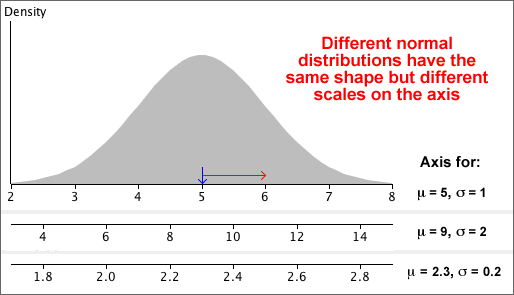

Effect of normal parameters on distribution
Distributions from the normal family have different locations and spreads, but other aspects of their shape are the same. Indeed, if the scales on the horizontal and vertical axes are suitably chosen, ...
